For this project, you will need:
Fold the cardboard in half lengthways.
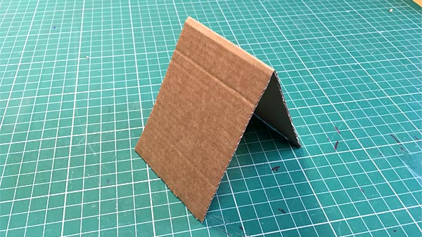Cut triangles on both of the short edges, to make teeth.
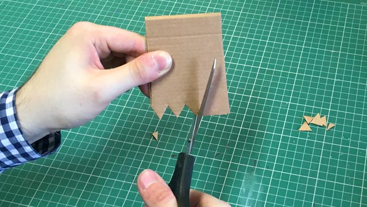Bend and curl the teeth so they point backwards.
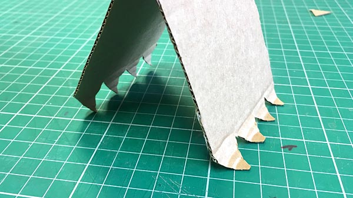Hold the servo upright and turn the arm as far anticlockwise as it will go.
Then, carefully remove the arm, and push it back on at the 9’clock position.
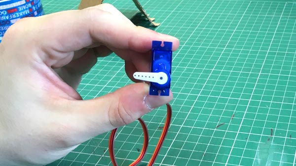Tape the servo halfway up the back side of the cardboard, with the arm sticking over the side.
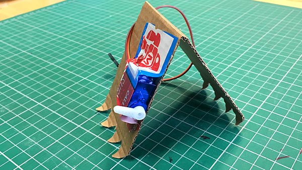Take 10cm of metal wire, and bend a right angle a third of the way along, to make an “L” shape:
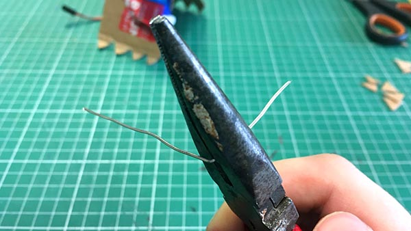Push the longer end of the wire through the hole at the end of the servo arm, and bend the end over to hold it in place.
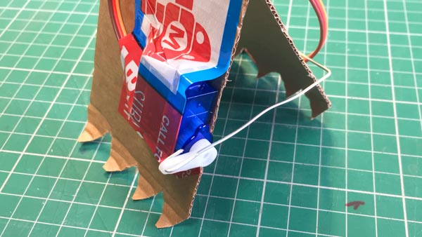Use some tape to fix the other end of the metal wire about halfway up the front of your Inch Worm.
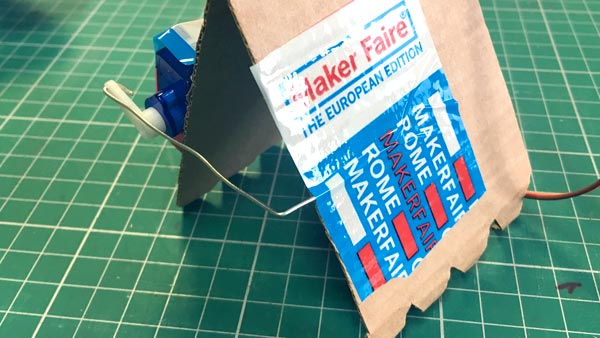Decorate your Inch Worm.
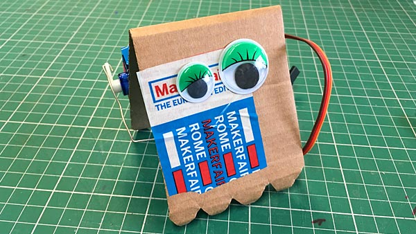Your servo has three wires coming out of it. Find the sockets at the end of those wires, and stick jumper wires into them. Use some tape to fix them into place.
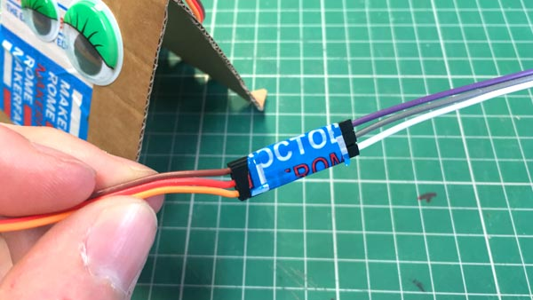Now your Inch Worm is finished, it’s time to write the code that will make it come to life!
Start a new, empty project at makecode.microbit.org
Add an on button A pressed block.
Open the Advanced > Pins drawer, and find the servo write pin block inside it.
Drag the servo write pin block into your on button A pressed block, and set the servo angle to 180.
Finally, add an image to show the worm’s legs are closed.
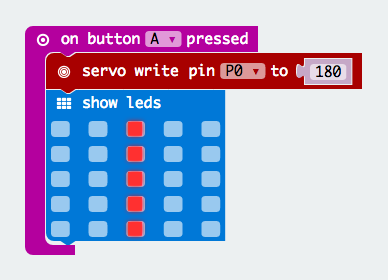Duplicate the entire on button A pressed block, but change the button to B, and the angle to 0 degrees.
Change the icon so that it looks like the worm’s legs are open.
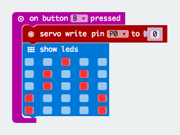Find the on start block. Add a servo write pin block inside it, and set the servo angle to 0.
Copy in the icon of the worm’s open legs, from your on button B pressed block.
Download code onto your microbit.
Now it’s time to connect your microbit up to your Inchworm.
Attach three crocodile clips to the three jumper wires your Inchworm.
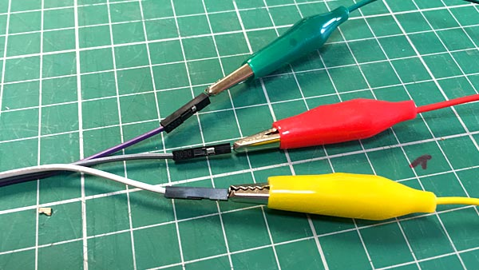Trace the orange wire from the servo. Follow it all the way along to the crocodile clip at the end, and connect that clip to pin 0 on your microbit.
This connection is called the “signal” wire – it lets the servo write pin blocks in your code send the electrical pulse that turns the servo to the required angle.
Your servo also needs power to run. Power is carried along the red and brown wires from the servo, which need to be connected to the 3V and GND pins on your microbit.
Find the red wire coming from the servo. Follow it all the way along, and connect the crocodile clip at the end to the 3V pin on your microbit.
Then find the brown wire. Follow it all the way along, and connect it to the GND pin on your microbit.
With that done, your microbit should look like this:
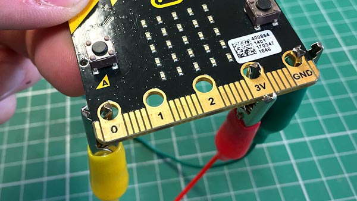Plug your battery into the microbit, and test your Inchworm by pressing the A or B buttons.
Try adding more weight – stick some coins onto the inside of the front face.
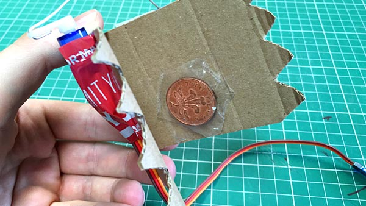Bend the wire outwards a bit, to shorten the Inchworm’s stride.
Now you’re happy with your Inchworm, all that’s left to do is… Race!